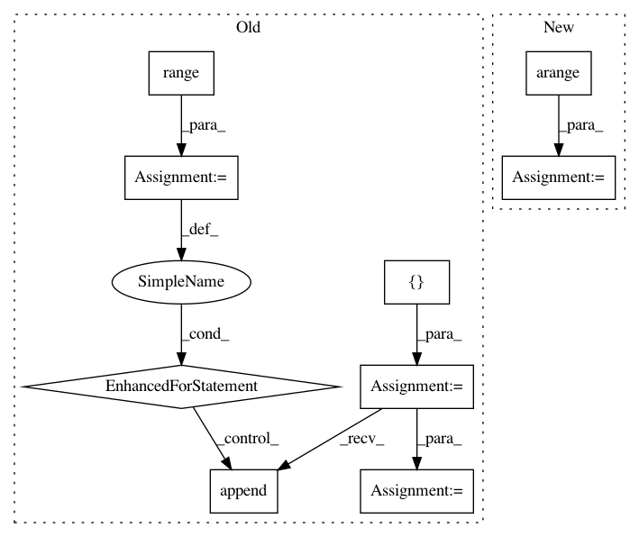

9b664bd7cd8dbb9657626166ba61887ed06774d7,gpytorch/utils/toeplitz.py,,index_coef_to_sparse,#Any#Any#Any#,6
Before Change
W[i, index_matrix[i, j]] = value_matrix[i, j].
num_target_points, num_coefficients = value_matrix.size()
index_list = [[], []]
value_list = []
for i in range(num_target_points):
for j in range(num_coefficients):
if value_matrix[i, j] == 0:
continue
index_list[0].append(i)
index_list[1].append(index_matrix[i, j])
value_list.append(value_matrix[i, j])
index_tensor = torch.LongTensor(index_list)
value_tensor = torch.FloatTensor(value_list)
res = torch.sparse.FloatTensor(index_tensor, value_tensor, torch.Size([num_target_points, row_length]))
return res
After Change
num_target_points, num_coefficients = value_matrix.size()
row_tensor = torch.arange(0, num_target_points).unsqueeze(1)
row_tensor = row_tensor.repeat(1, num_coefficients).type_as(index_matrix)
index_tensor = torch.cat([row_tensor.view(1, -1), index_matrix.view(1, -1)], 0)
value_tensor = value_matrix.view(-1)
nonzero_indices = value_tensor.nonzero()
if nonzero_indices.storage():
In pattern: SUPERPATTERN
Frequency: 3
Non-data size: 9
Instances
Project Name: cornellius-gp/gpytorch
Commit Name: 9b664bd7cd8dbb9657626166ba61887ed06774d7
Time: 2017-09-13
Author: gpleiss@gmail.com
File Name: gpytorch/utils/toeplitz.py
Class Name:
Method Name: index_coef_to_sparse
Project Name: KrishnaswamyLab/PHATE
Commit Name: 55b6fb811938351d42929228ccbb0281183d8cf6
Time: 2018-04-06
Author: scottgigante@gmail.com
File Name: Python/phate/phate.py
Class Name: PHATE
Method Name: von_neumann_entropy
Project Name: idaholab/raven
Commit Name: fcb05df08ef25ee5d9e5f015335d64fdd156bf38
Time: 2020-11-09
Author: mohammad.abdo@inl.gov
File Name: framework/Optimizers/mutators/mutators.py
Class Name:
Method Name: swapMutator